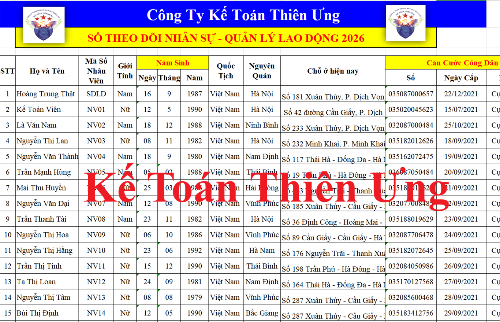

Hướng dẫn cách lập sổ quản lý lao động theo nghị định 145/2020/NĐ-CP của doanh nghiệp theo mẫu sổ quản lý lao động mới nhất năm 2026
Theo khoản 1 điều 12 của Bộ luật Lao động số 45/2019/QH14 quy định về trách nhiệm quản lý lao động của người sử dụng lao động thì:
Người sử dụng lao động có trách nhiệm lập, cập nhật, quản lý, sử dụng sổ quản lý lao động bằng bản giấy hoặc bản điện tử và xuất trình khi cơ quan nhà nước có thẩm quyền yêu cầu.
Và Chính phủ quy định chi tiết việc lập, cập nhật, quản lý, sử dụng sổ quản lý lao động tại khoản 1 Điều 12 của Bộ luật Lao động tại điều 3 của Nghị định 145/2020/NĐ-CP như sau:
1. Trong thời hạn 30 ngày kể từ ngày bắt đầu hoạt động, người sử dụng lao động phải lập sổ quản lý lao động ở nơi đặt trụ sở, chi nhánh, văn phòng đại diện.
2. Sổ quản lý lao động được lập bằng bản giấy hoặc bản điện tử nhưng phải bảo đảm các thông tin cơ bản về người lao động, gồm: họ tên; giới tính; ngày tháng năm sinh; quốc tịch; nơi cư trú; số thẻ Căn cước công dân hoặc Chứng minh nhân dân hoặc hộ chiếu; trình độ chuyên môn kỹ thuật; bậc trình độ kỹ năng nghề; vị trí việc làm; loại hợp đồng lao động; thời điểm bắt đầu làm việc; tham gia bảo hiểm xã hội; tiền lương; nâng bậc, nâng lương; số ngày nghỉ trong năm; số giờ làm thêm; học nghề, đào tạo, bồi dưỡng, nâng cao trình độ kỹ năng nghề; kỷ luật lao động, trách nhiệm vật chất; tai nạn lao động, bệnh nghề nghiệp; thời điểm chấm dứt hợp đồng lao động và lý do.
3. Người sử dụng lao động có trách nhiệm thể hiện, cập nhật các thông tin quy định tại khoản 2 Điều này kể từ ngày người lao động bắt đầu làm việc; quản lý, sử dụng và xuất trình sổ quản lý lao động với cơ quan quản lý về lao động và các cơ quan liên quan khi có yêu cầu theo quy định của pháp luật.
Mẫu sổ quản lý lao động của doanh nghiệp mới nhất năm 2026:

(Đây là mẫu sổ quản lý lao động được lập trên Excel của Công Ty Tư Vấn Minh Phúc để các bạn tham khảo)
Các bạn muốn lấy mẫu này thì gửi về mail: ketoandieutam@gmail.com
Cách lập sổ quản lý lao động:
+ Trên sổ quản lý lao động phải bảo đảm các thông tin cơ bản về người lao động như:
+/ Họ tên; giới tính; ngày tháng năm sinh; quốc tịch; nơi cư trú; số thẻ Căn cước công dân hoặc Chứng minh nhân dân hoặc hộ chiếu
+/ Trình độ chuyên môn kỹ thuật; bậc trình độ kỹ năng nghề;
+/ Vị trí việc làm;
+/ Loại hợp đồng lao động; thời điểm bắt đầu làm việc; tham gia bảo hiểm xã hội; tiền lương; nâng bậc, nâng lương;
+/ Số ngày nghỉ trong năm; số giờ làm thêm;
+/ Học nghề, đào tạo, bồi dưỡng, nâng cao trình độ kỹ năng nghề;
+/ Kỷ luật lao động, trách nhiệm vật chất; tai nạn lao động, bệnh nghề nghiệp;
+/ Thời điểm chấm dứt hợp đồng lao động và lý do.
+/ Trình độ chuyên môn kỹ thuật; bậc trình độ kỹ năng nghề;
+/ Vị trí việc làm;
+/ Loại hợp đồng lao động; thời điểm bắt đầu làm việc; tham gia bảo hiểm xã hội; tiền lương; nâng bậc, nâng lương;
+/ Số ngày nghỉ trong năm; số giờ làm thêm;
+/ Học nghề, đào tạo, bồi dưỡng, nâng cao trình độ kỹ năng nghề;
+/ Kỷ luật lao động, trách nhiệm vật chất; tai nạn lao động, bệnh nghề nghiệp;
+/ Thời điểm chấm dứt hợp đồng lao động và lý do.
+ Căn cứ để lập sổ quản lý lao động: Các bạn căn cứ vào hồ sơ nhân sự của người lao động như: Hợp đồng lao động, căn cước công dân, bằng cấp... để ghi các nội dung đó lên trên sổ quản lý lao động
+ Lập bằng bản giấy hoặc bản điện tử đều được
Phạt vi phạm hành chính về sổ quản lý lao động
Theo điều 8 của Nghị định 12/2022/NĐ-CP quy định xử phạt vi phạm hành chính trong lĩnh vực lao động thì:
Theo điều 8 của Nghị định 12/2022/NĐ-CP quy định xử phạt vi phạm hành chính trong lĩnh vực lao động thì:
Điều 8. Vi phạm về tuyển dụng, quản lý lao động
1. Phạt tiền từ 1.000.000 đồng đến 3.000.000 đồng đối với người sử dụng lao động khi có một trong các hành vi sau đây:
...
...
c) Không thể hiện, nhập đầy đủ thông tin về người lao động vào sổ quản lý lao động kể từ ngày người lao động bắt đầu làm việc;
d) Không xuất trình sổ quản lý lao động khi cơ quan quản lý nhà nước có thẩm quyền yêu cầu.
2. Phạt tiền từ 5.000.000 đồng đến 10.000.000 đồng đối với người sử dụng lao động có một trong các hành vi sau đây:
d) Không lập sổ quản lý lao động hoặc lập sổ quản lý lao động không đúng thời hạn hoặc không đảm bảo các nội dung cơ bản theo quy định pháp luật.
Kế Toán Diệu Tâm mời các bạn tham khảo thêm:
Cách làm báo cáo tình hình sử dụng lao động theo mẫu mới nhất năm 2026